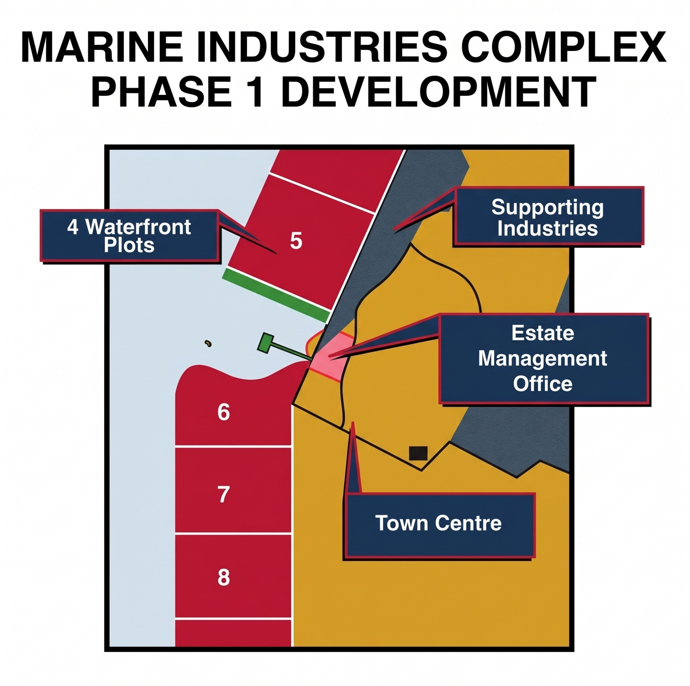
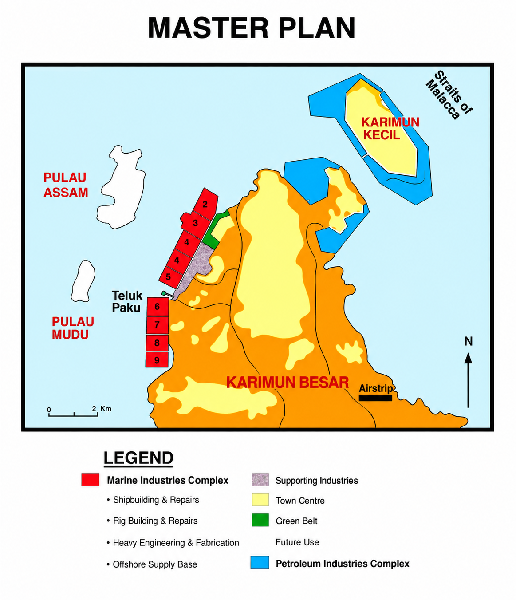
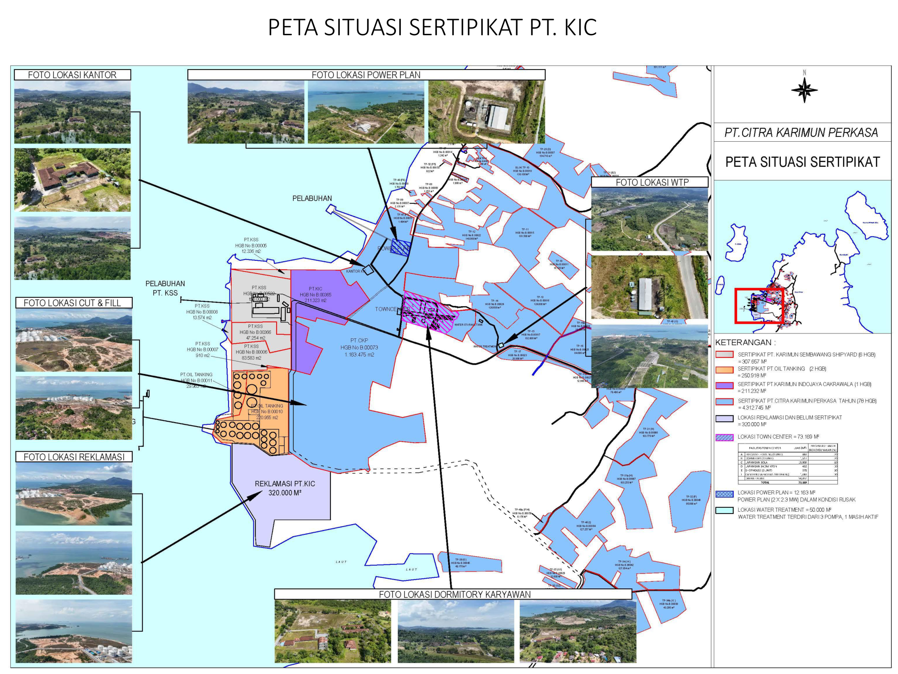

DEVELOPMENT PLAN
Marine Industries Complex — Phase 1
Waterfront plots, supporting industries, an estate management office and town centre form the development layout.
View development plan ↗
01 Phase 1 development ↗ 02 The Karimun islands ↗
02 The Karimun islands ↗

03 Master plan ↗ 04 Regional shipping route ↗
04 Regional shipping route ↗PT Karimun Indojaya Cakrawala (PT KIC) is the management company for the Karimun industrial and maritime estate, as presented in the company profile.
Karimun Marine & Industrial Complex (KMIC) brings together the planned development of marine, heavy engineering and supporting industries in the Karimun Islands. Its master plan connects waterfront industrial areas with utilities, estate management and town facilities.
Located near the main shipping route through the Straits of Malacca, the complex offers a setting for shipbuilding, ship repair, rig construction and repair, heavy engineering, fabrication and offshore supply activities.
Strategically located just off the main east-west shipping route and blessed with the deep waters, the Karimun islands offer multi faceted benefits as Indonesia's latest and upcoming and industrial complex Karimun is the third island in the Riau Islands Province alongside Batam and Bintan earmarked for development by the central government, and this serves as a guarantee of Karimun's success.
With Singapore just 40 km away. the Karimun Maritime and Industrial Complex presents unique investment opportunities, investors can take advantage of Singapore's international linkage and its full facilities for quick start-ups, whilst enjoying Karimun's cost competitive operating environment Karimun for heavy engineering and marine industries, thanks to easy access via the Straits of Malaca and deep water berth for very large crude carriers (VLCC's)
Infrastructure to support maritime and industrial activities is already in place and can be further developed across four areas: Pulau Karimun Besar —specifically the Phase 1 Industrial and Maritime Complex (840 hectares)—and Pulau Karimun Kecil (500 hectares). Together with two smaller islands, Pulau Asam (360 hectares) and Pulau Mudu (80 hectares), Karimun currently population 273,94 people. Regular ferries ply between Karimun and Singapore which is 1hour and fifteen minutes away by boat.
Land within the industrial estate is not for sale; instead, it is made available through investment partnerships, cooperation arrangements, collaborative / "Team Up" or lease agreements

Proximity to Singapore, access to the Straits of Malacca and naturally sheltered waters shape the maritime potential of the Karimun Islands.
Explore our location ↑Development plans and industrial projects featured in the company profile. The brochure does not specify current completion dates or operating status.
Waterfront plots, supporting industries, an estate management office and town centre form the development layout.
View development plan ↗
Karimun's sheltered waters and strategic maritime location provide a setting for marine industry and waterfront activities.
Illustrative image supplied for this profile.
The company profile presents the Oiltanking Karimun terminal at Teluk Paku, Pasir Panjang, Meral Barat, alongside its storage infrastructure.
Project reference from the company brochure.Shipbuilding & repair
Rig building & repair
Heavy engineering & fabrication
Offshore supply base
Hover over or select a numbered point to view its drone photographs. On mobile, tap a location below the map.

Locations follow the callouts in the supplied survey report. Photographs document the survey and do not represent a live view.